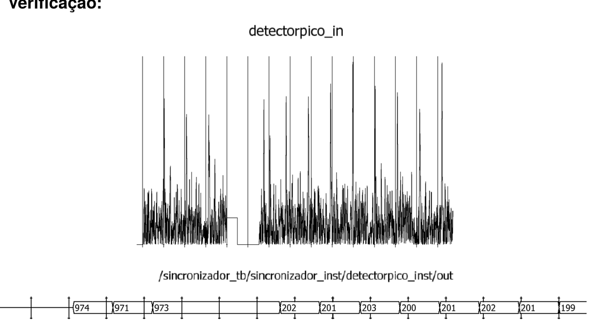

AcademicAcadêmicoParcours académique
Timing Synchronization Techniques for OFDM SystemsTécnicas de Sincronismo Temporal em Sistemas OFDMTechniques de synchronisation temporelle pour les systèmes OFDM
Thesis (PDF, in Portuguese)Monografia (PDF)Mémoire (PDF, en portugais)Defence slides (PDF, in Portuguese)Slides da defesa (PDF)Diapositives de la soutenance (PDF, en portugais)
Imagine walking into a circular museum where the paintings tell one story in order, and nobody tells you which painting comes first. You could look at every one and still not follow the story. A digital receiver has the same problem.
Blocks without a visible start
Wi-Fi, digital television, mobile networks and modems that send data over power lines all use a method called OFDM. Instead of sending bits one after another on a single channel, the transmitter spreads them over hundreds of narrow channels at once and sends the result as a block. Then the next block, and the next.
The receiver sees one long, noisy stream of numbers. To undo what the transmitter did, it must cut that stream into exactly the same blocks. If it cuts a few samples early or late, pieces of neighbouring blocks leak into each other and every one of the hundreds of channels is corrupted at once. Finding the cut is called timing synchronisation, and everything else in the receiver depends on it.
A repetition to listen for
Each block begins with a copy of its own last few samples. That copy is there to protect the block from echoes in the cable or in the air, but it also leaves a fingerprint: somewhere in the stream, a short stretch of signal is repeated exactly one block length later. A receiver can slide a window along the stream, compare it with the window one block later, and look for the place where the two match best.
"Match best" can be measured in several ways. The simplest multiplies the two windows together and looks for the largest result. Others also take into account how strong the signal is, or how much noise is expected. The more a method takes into account, the more reliable it is when the signal is weak, and the more arithmetic it needs. In a chip, arithmetic costs area and power, and multiplications cost far more than additions.
What I did
The work was done in the laboratory that was building a modem for communication over the electrical grid, the first of its kind in Latin America. That modem needed a synchroniser that was good and cheap.
First I compared the three established methods by simulation: a very large number of blocks sent through a model of a real channel with noise added, counting how often each method misses the start of the block by more than a few samples.
Then I proposed a fourth method. The modem's signal has a special property: it is made only of ordinary real numbers, with no imaginary part. In that case the comparison between the two windows can be done by subtracting them and adding up the absolute differences, with no multiplication at all. The best match is where that sum is smallest.

In the simulations the new method was not only the cheapest; it was also the most accurate of the four, as long as transmitter and receiver agree on their frequency. That is its limit: when the two drift apart in frequency, as happens with radio and with moving devices, its accuracy falls, and beyond a difference of about 4% the classical methods win. On a cable, where that drift is negligible, the limit does not bite.
Built, not only simulated
I then built all four methods in an FPGA, a chip whose logic can be rewired. A trick makes them affordable: the sum over the window does not have to be recomputed for every new sample. It is enough to add the newest term and subtract the oldest one, so the cost no longer depends on how long the window is.
Around that core, two more blocks complete the synchroniser: one that finds the peak, and one that tells the rest of the receiver where each block begins. I checked the hardware by feeding it the same data as the software model and comparing the outputs number by number until they were identical.

The count of logic used confirmed the expectation: the proposed method needs the least, the simplest classical one comes close, and the most sophisticated one needs much more, because it has to multiply, divide and take square roots.
This was my first real hardware design. The habits it taught me, simulate first, count the cost, then check the chip against the model bit by bit, are the ones I used for the next fifteen years.
The work studies blind timing synchronisation for OFDM: estimators that exploit redundancy already present in the transmitted signal, a repeated preamble or the cyclic prefix, and need no knowledge of a reference sequence. The aim was a low-complexity synchroniser for an HS-OFDM power-line communication modem.
Estimators
For both the preamble and the cyclic-prefix formulations the literature offers three families: maximum correlation (MC), minimum mean-square error (MMSE) and maximum likelihood (ML). Each slides a window of the prefix length over the received samples and compares it with the window one symbol length later. MC maximises the correlation between the two; MMSE adds the energy of both windows; ML weights correlation and energy by a factor that depends on the signal-to-noise ratio.
Proposed estimator: MMAE
For systems whose transmitted signal is real, such as Hermitian-symmetric OFDM (HS-OFDM), and assuming no carrier frequency offset, a minimum mean absolute error (MMAE) estimator is proposed. The metric is the sum of absolute differences between the two windows, minimised over the timing index, which removes all multipliers from the datapath.
Simulation
The cyclic-prefix formulation was adopted, since it adds no redundancy to the signal. The system is HS-OFDM with 256 subcarriers, a cyclic prefix of 8 samples and 4-QAM, over a linear time-invariant channel of length 9. A frequency offset between transmitter and receiver is modelled explicitly. Performance is the probability that the estimate falls more than four samples from the true position.
Without frequency offset, MC is the worst at practically every SNR, followed by MMSE and then ML, which approaches MMSE at high SNR. MMAE outperforms all three, reaching a failure probability of 1.6 × 10⁻⁶ at 16 dB. With frequency offset, MC, MMSE and ML are essentially insensitive, whereas MMAE degrades, as expected from its derivation. It remains no worse than ML up to an offset of about 4% and no worse than MMSE up to about 5%.
FPGA implementation
All four metrics were implemented recursively: each new value is the previous one plus the newest term minus the oldest, a sliding window of the prefix length, so the number of operations per sample is constant. The complete synchroniser adds a peak detector, a maximum for MC and a minimum for the others, and a pulse generator that frames the symbol for the following blocks.
The designs were synthesised for an Altera Cyclone II device (EP2C70F896C6) with 12-bit input samples and bus widths sized so that no truncation occurs. Comparing only the logic specific to each estimator, MMAE is the least complex, MC is close, MMSE moderately larger, and ML substantially larger, mainly in logic cells, because of its multiplier, divider and square-root blocks. The hardware was verified by comparing its outputs with the software model sample by sample; the implemented configuration used a symbol length of 1024 samples and a prefix of 32.
Conclusion
For real-valued OFDM signals with negligible frequency offset, as in power-line communication, MMAE gives the best timing performance of the techniques studied at the lowest hardware cost. Where frequency offset cannot be neglected, ML is the most robust choice, at a substantially higher cost. The work was supervised by Augusto Santiago Cerqueira at UFJF.
Imagine entrar em um museu circular em que os quadros contam uma história em ordem, e ninguém diz qual é o primeiro quadro. Você poderia olhar todos e ainda assim não entender a história. Um receptor digital tem o mesmo problema.
Blocos sem começo visível
Wi-Fi, TV digital, redes de celular e modems que enviam dados pela rede elétrica usam um método chamado OFDM. Em vez de mandar os bits um depois do outro em um único canal, o transmissor os espalha por centenas de canais estreitos ao mesmo tempo e envia o resultado como um bloco. Depois o bloco seguinte, e o seguinte.
O receptor enxerga uma longa sequência ruidosa de números. Para desfazer o que o transmissor fez, precisa cortar essa sequência exatamente nos mesmos blocos. Se cortar algumas amostras antes ou depois, pedaços de blocos vizinhos se misturam e todos os canais, as centenas deles, são corrompidos de uma vez. Achar o ponto de corte se chama sincronização temporal, e todo o resto do receptor depende dela.
Uma repetição para procurar
Cada bloco começa com uma cópia das suas últimas amostras. Essa cópia existe para proteger o bloco dos ecos no cabo ou no ar, mas também deixa uma impressão digital: em algum ponto da sequência, um trecho curto de sinal se repete exatamente um bloco depois. O receptor pode deslizar uma janela pela sequência, compará-la com a janela um bloco adiante e procurar o ponto em que as duas mais se parecem.
"Mais se parecem" pode ser medido de várias formas. A mais simples multiplica as duas janelas e procura o maior resultado. Outras levam em conta também a força do sinal, ou quanto ruído se espera. Quanto mais coisas o método considera, mais confiável ele é quando o sinal é fraco, e mais contas exige. Em um chip, conta custa área e energia, e multiplicações custam muito mais que somas.
O que eu fiz
O trabalho foi feito no laboratório que estava construindo um modem para comunicação pela rede elétrica, o primeiro do tipo na América Latina. Esse modem precisava de um sincronizador bom e barato.
Primeiro comparei os três métodos consagrados por simulação: um número muito grande de blocos enviados por um modelo de canal real, com ruído, contando quantas vezes cada método erra o começo do bloco por mais que algumas amostras.
Depois propus um quarto método. O sinal do modem tem uma propriedade especial: é feito só de números reais comuns, sem parte imaginária. Nesse caso, a comparação entre as duas janelas pode ser feita subtraindo uma da outra e somando as diferenças absolutas, sem nenhuma multiplicação. O melhor ponto é onde essa soma é menor.
Nas simulações, o novo método não foi só o mais barato; foi também o mais preciso dos quatro, desde que transmissor e receptor concordem em frequência. Esse é o seu limite: quando os dois se afastam em frequência, como acontece no rádio e em aparelhos em movimento, a precisão cai, e acima de uma diferença de cerca de 4% os métodos clássicos ganham. Em um cabo, onde esse desvio é desprezível, o limite não atrapalha.
Construído, não só simulado
Em seguida construí os quatro métodos em um FPGA, um chip cuja lógica pode ser refeita. Um truque os torna viáveis: a soma sobre a janela não precisa ser recalculada a cada nova amostra. Basta somar o termo mais novo e subtrair o mais antigo, e o custo deixa de depender do tamanho da janela.
Em volta desse núcleo, dois outros blocos completam o sincronizador: um que encontra o pico e outro que avisa o resto do receptor onde começa cada bloco. Verifiquei o hardware dando a ele os mesmos dados do modelo em software e comparando as saídas número a número, até ficarem idênticas.
A contagem de lógica confirmou a expectativa: o método proposto é o que menos exige, o clássico mais simples fica perto, e o mais sofisticado exige muito mais, porque precisa multiplicar, dividir e extrair raiz quadrada.
Foi meu primeiro projeto de hardware de verdade. Os hábitos que ele me ensinou, simular primeiro, contar o custo e depois conferir o chip com o modelo bit a bit, são os que usei pelos quinze anos seguintes.
O trabalho estuda a sincronização temporal cega em OFDM: estimadores que exploram a redundância já presente no sinal transmitido, um preâmbulo repetido ou o prefixo cíclico, sem conhecimento de uma sequência de referência. O objetivo era um sincronizador de baixa complexidade para um modem HS-OFDM de comunicação pela rede elétrica.
Estimadores
Tanto para o preâmbulo quanto para o prefixo cíclico, a literatura oferece três famílias: máxima correlação (MC), mínimo erro quadrático médio (MMSE) e máxima verossimilhança (ML). Cada uma desliza uma janela do tamanho do prefixo sobre as amostras recebidas e a compara com a janela um símbolo adiante. A MC maximiza a correlação entre as duas; a MMSE acrescenta a energia das duas janelas; a ML pondera correlação e energia por um fator que depende da relação sinal-ruído.
Estimador proposto: MMAE
Para sistemas cujo sinal transmitido é real, como o OFDM Hermitiano Simétrico (HS-OFDM), e supondo ausência de desvio de frequência de portadora, propõe-se um estimador de mínimo erro absoluto médio (MMAE). A métrica é a soma das diferenças absolutas entre as duas janelas, minimizada sobre o índice de sincronismo, o que elimina todos os multiplicadores do caminho de dados.
Simulação
Adotou-se a formulação por prefixo cíclico, que não acrescenta redundância ao sinal. O sistema é um HS-OFDM de 256 subportadoras, prefixo cíclico de 8 amostras e 4-QAM, em um canal linear invariante no tempo de comprimento 9. O desvio de frequência entre transmissor e receptor é modelado explicitamente. O desempenho é a probabilidade de a estimativa cair a mais de quatro amostras da posição correta.
Sem desvio de frequência, a MC é a pior em praticamente qualquer SNR, seguida da MMSE e depois da ML, que se aproxima da MMSE em SNR elevada. A MMAE supera as três, com probabilidade de falha de 1,6 × 10⁻⁶ em 16 dB. Com desvio de frequência, MC, MMSE e ML são praticamente insensíveis, enquanto a MMAE se degrada, como esperado pela sua dedução. Ela não perde para a ML até um desvio de cerca de 4%, nem para a MMSE até cerca de 5%.
Implementação em FPGA
As quatro métricas foram implementadas de forma recursiva: cada novo valor é o anterior mais o termo mais novo menos o mais antigo, uma janela deslizante do tamanho do prefixo, de modo que o número de operações por amostra é constante. O sincronizador completo acrescenta um detector de pico, de máximo para a MC e de mínimo para as demais, e um gerador de pulsos que delimita o símbolo para os blocos seguintes.
Os projetos foram sintetizados para um dispositivo Altera Cyclone II (EP2C70F896C6), com amostras de entrada de 12 bits e barramentos dimensionados para que não haja truncamento. Comparando apenas a lógica exclusiva de cada estimador, a MMAE é a menos complexa, a MC fica próxima, a MMSE é moderadamente maior e a ML substancialmente maior, sobretudo em células lógicas, por causa dos blocos de multiplicação, divisão e raiz quadrada. O hardware foi verificado comparando suas saídas com o modelo em software amostra por amostra; a configuração implementada usou símbolo de 1024 amostras e prefixo de 32.
Conclusão
Para sinais OFDM reais com desvio de frequência desprezível, como na comunicação pela rede elétrica, a MMAE oferece o melhor desempenho de sincronismo entre as técnicas estudadas, com o menor custo de hardware. Onde o desvio de frequência não pode ser desprezado, a ML é a escolha mais robusta, a um custo bem maior. O trabalho foi orientado por Augusto Santiago Cerqueira, na UFJF.
Imaginez un musée circulaire où les tableaux racontent une histoire dans l'ordre, sans que personne ne vous dise lequel est le premier. Vous pourriez tous les regarder sans suivre l'histoire. Un récepteur numérique a le même problème.
Des blocs sans début visible
Le Wi-Fi, la télévision numérique, les réseaux mobiles et les modems qui envoient des données sur le réseau électrique utilisent une méthode appelée OFDM. Au lieu d'envoyer les bits l'un après l'autre sur un seul canal, l'émetteur les répartit sur des centaines de canaux étroits à la fois et envoie le résultat sous forme de bloc. Puis le bloc suivant, et le suivant.
Le récepteur voit une longue suite bruitée de nombres. Pour défaire ce que l'émetteur a fait, il doit découper cette suite exactement selon les mêmes blocs. S'il coupe quelques échantillons trop tôt ou trop tard, des morceaux de blocs voisins se mélangent et les centaines de canaux sont corrompus d'un coup. Trouver le point de coupe s'appelle la synchronisation temporelle, et tout le reste du récepteur en dépend.
Une répétition à guetter
Chaque bloc commence par une copie de ses derniers échantillons. Cette copie est là pour protéger le bloc des échos dans le câble ou dans l'air, mais elle laisse aussi une empreinte : quelque part dans la suite, un court passage du signal se répète exactement un bloc plus loin. Le récepteur peut faire glisser une fenêtre le long de la suite, la comparer à la fenêtre située un bloc plus loin, et chercher l'endroit où les deux se ressemblent le plus.
« Se ressemblent le plus » peut se mesurer de plusieurs façons. La plus simple multiplie les deux fenêtres et cherche le plus grand résultat. D'autres tiennent compte aussi de la force du signal, ou du bruit attendu. Plus une méthode tient compte de choses, plus elle est fiable quand le signal est faible, et plus elle demande de calculs. Dans une puce, le calcul coûte de la surface et de l'énergie, et les multiplications coûtent bien plus que les additions.
Ce que j'ai fait
Le travail a été mené dans le laboratoire qui construisait un modem de communication sur le réseau électrique, le premier du genre en Amérique latine. Ce modem avait besoin d'un synchroniseur bon et peu coûteux.
J'ai d'abord comparé les trois méthodes établies par simulation : un très grand nombre de blocs envoyés à travers un modèle de canal réel, avec du bruit, en comptant combien de fois chaque méthode manque le début du bloc de plus de quelques échantillons.
J'ai ensuite proposé une quatrième méthode. Le signal du modem a une propriété particulière : il n'est fait que de nombres réels ordinaires, sans partie imaginaire. Dans ce cas, la comparaison entre les deux fenêtres peut se faire en les soustrayant et en additionnant les différences absolues, sans aucune multiplication. Le meilleur point est celui où cette somme est la plus petite.
Dans les simulations, la nouvelle méthode n'était pas seulement la moins chère ; elle était aussi la plus précise des quatre, tant que l'émetteur et le récepteur s'accordent en fréquence. C'est sa limite : quand les deux s'écartent en fréquence, comme en radio ou avec des appareils en mouvement, sa précision chute, et au-delà d'un écart d'environ 4 % les méthodes classiques l'emportent. Sur un câble, où cet écart est négligeable, la limite ne gêne pas.
Construit, pas seulement simulé
J'ai ensuite réalisé les quatre méthodes dans un FPGA, une puce dont la logique peut être recâblée. Une astuce les rend abordables : la somme sur la fenêtre n'a pas à être recalculée à chaque nouvel échantillon. Il suffit d'ajouter le terme le plus récent et de retrancher le plus ancien, si bien que le coût ne dépend plus de la longueur de la fenêtre.
Autour de ce cœur, deux autres blocs complètent le synchroniseur : l'un trouve le pic, l'autre indique au reste du récepteur où commence chaque bloc. J'ai vérifié le matériel en lui fournissant les mêmes données qu'au modèle logiciel et en comparant les sorties nombre par nombre, jusqu'à ce qu'elles soient identiques.
Le décompte de la logique a confirmé l'attente : la méthode proposée est celle qui en demande le moins, la méthode classique la plus simple la suit de près, et la plus sophistiquée en demande beaucoup plus, parce qu'elle doit multiplier, diviser et extraire des racines carrées.
C'était ma première vraie conception matérielle. Les habitudes qu'elle m'a données, simuler d'abord, compter le coût, puis comparer la puce au modèle bit par bit, sont celles que j'ai gardées pendant les quinze années suivantes.
Le travail étudie la synchronisation temporelle aveugle en OFDM : des estimateurs qui exploitent la redondance déjà présente dans le signal émis, un préambule répété ou le préfixe cyclique, sans connaissance d'une séquence de référence. L'objectif était un synchroniseur de faible complexité pour un modem HS-OFDM de communication par courants porteurs.
Estimateurs
Pour le préambule comme pour le préfixe cyclique, la littérature propose trois familles : corrélation maximale (MC), erreur quadratique moyenne minimale (MMSE) et maximum de vraisemblance (ML). Chacune fait glisser une fenêtre de la longueur du préfixe sur les échantillons reçus et la compare à la fenêtre située un symbole plus loin. MC maximise la corrélation entre les deux ; MMSE y ajoute l'énergie des deux fenêtres ; ML pondère corrélation et énergie par un facteur qui dépend du rapport signal sur bruit.
Estimateur proposé : MMAE
Pour les systèmes dont le signal émis est réel, comme l'OFDM à symétrie hermitienne (HS-OFDM), et en l'absence supposée de décalage de fréquence porteuse, un estimateur à erreur absolue moyenne minimale (MMAE) est proposé. La métrique est la somme des différences absolues entre les deux fenêtres, minimisée sur l'indice de synchronisation, ce qui supprime tous les multiplieurs du chemin de données.
Simulation
La formulation par préfixe cyclique a été retenue, car elle n'ajoute aucune redondance au signal. Le système est un HS-OFDM à 256 sous-porteuses, préfixe cyclique de 8 échantillons et 4-QAM, sur un canal linéaire invariant dans le temps de longueur 9. Le décalage de fréquence entre émetteur et récepteur est modélisé explicitement. La performance est la probabilité que l'estimation tombe à plus de quatre échantillons de la position réelle.
Sans décalage de fréquence, MC est la moins bonne à pratiquement tous les SNR, suivie de MMSE puis de ML, qui rejoint MMSE à fort SNR. MMAE surpasse les trois, avec une probabilité d'échec de 1,6 × 10⁻⁶ à 16 dB. Avec un décalage de fréquence, MC, MMSE et ML y sont pratiquement insensibles, alors que MMAE se dégrade, comme le laisse prévoir sa dérivation. Elle ne fait pas moins bien que ML jusqu'à un décalage d'environ 4 %, ni moins bien que MMSE jusqu'à environ 5 %.
Implémentation sur FPGA
Les quatre métriques ont été implémentées de façon récursive : chaque nouvelle valeur est la précédente plus le terme le plus récent moins le plus ancien, soit une fenêtre glissante de la longueur du préfixe, de sorte que le nombre d'opérations par échantillon est constant. Le synchroniseur complet ajoute un détecteur de pic, de maximum pour MC et de minimum pour les autres, et un générateur d'impulsions qui délimite le symbole pour les blocs suivants.
Les conceptions ont été synthétisées pour un composant Altera Cyclone II (EP2C70F896C6), avec des échantillons d'entrée sur 12 bits et des largeurs de bus dimensionnées pour éviter toute troncature. En ne comparant que la logique propre à chaque estimateur, MMAE est le moins complexe, MC en est proche, MMSE est modérément plus gros et ML nettement plus gros, surtout en cellules logiques, à cause de ses blocs de multiplication, de division et de racine carrée. Le matériel a été vérifié en comparant ses sorties au modèle logiciel échantillon par échantillon ; la configuration implémentée utilisait un symbole de 1024 échantillons et un préfixe de 32.
Conclusion
Pour des signaux OFDM réels à décalage de fréquence négligeable, comme en communication par courants porteurs, MMAE offre la meilleure performance de synchronisation parmi les techniques étudiées, au coût matériel le plus bas. Lorsque le décalage de fréquence ne peut être négligé, ML est le choix le plus robuste, pour un coût nettement plus élevé. Le travail a été encadré par Augusto Santiago Cerqueira, à l'UFJF.